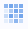

最終更新日：2019/09/10
グリッド線を追加ボタンの使用
カテゴリXY値からヒートマップを作成する場合、ヒートマップ上の任意のセルをクリックすると、グリッド線を追加ボタンが表示されます。このボタンをクリックして、各セルに境界線を追加できます。
更に境界線の色やスタイルを編集するには、軸をダブルクリックして軸ダイアログを開きます。グリッド線タブから、必要に応じて副グリッド線、色、スタイルそして太さを変更します。
グリッド線を手動で追加
グリッド線を追加ボタンはX軸とY軸の主目盛と副目盛の両方の増分が「1」に設定されているときにのみ利用可能です。グリッド線を追加ボタンがヒートマップ上で使用できないときには、
間隔をセルの境界線として使用
境界線の追加は、セル間の間隔を設定することでも可能です。
仮想行列からヒートマップを作図する場合、下記の方法でカスタム目盛ラベルを追加することができます。
| Note:
列名または列ラベルを使用して元のワークシートの列ラベル行にカスタムラベルテキストを配置しないでください。仮想行列を使用したグラフでは、元のワークシートは参照しません。 |
キーワード：ヒートマップ、境界、 グリッド線、 等高線、 ラベル、 境界線
必要なOriginのバージョン: Origin 2019